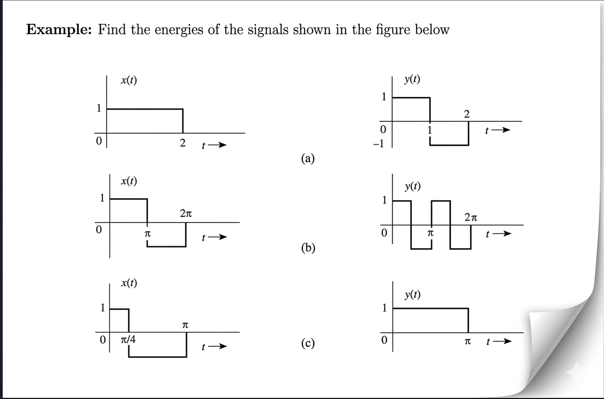

Reference Figure for Sets (a), (b), and (c)
Solution for Set (a)
1. Signal \( x(t) \)
The signal is a pulse of amplitude 1 from \( t=0 \) to \( t=2 \):
\[ E_x = \int_{0}^{2} |x(t)|^2 dt \]
\[ E_x = \int_{0}^{2} (1)^2 dt = \int_{0}^{2} 1 \, dt \]
\[ E_x = [t]_{0}^{2} = (2) - (0) = 2 \]
2. Signal \( y(t) \)
The signal has two parts: amplitude 1 in \([0, 1]\) and amplitude -1 in \([1, 2]\):
\[ E_y = \int_{0}^{2} |y(t)|^2 dt \]
\[ E_y = \int_{0}^{1} (1)^2 dt + \int_{1}^{2} (-1)^2 dt \]
\[ E_y = \int_{0}^{1} 1 \, dt + \int_{1}^{2} 1 \, dt \]
\[ E_y = [t]_{0}^{1} + [t]_{1}^{2} \]
\[ E_y = (1 - 0) + (2 - 1) = 1 + 1 = 2 \]
Final Result for (a): \( E_x = 2, E_y = 2 \)
Solution for Set (b)
1. Signal \( x(t) \)
Defined as 1 for \( t \in [0, \pi] \) and -1 for \( t \in [\pi, 2\pi] \):
\[ E_x = \int_{0}^{\pi} (1)^2 dt + \int_{\pi}^{2\pi} (-1)^2 dt \]
\[ E_x = \int_{0}^{\pi} 1 \, dt + \int_{\pi}^{2\pi} 1 \, dt \]
\[ E_x = [t]_{0}^{\pi} + [t]_{\pi}^{2\pi} \]
\[ E_x = (\pi - 0) + (2\pi - \pi) = \pi + \pi = 2\pi \]
2. Signal \( y(t) \)
This signal oscillates, but since \( |y(t)|^2 = 1 \) at all points between \( 0 \) and \( 2\pi \), we calculate the energy for the full duration shown in the graph:
\[ E_y = \int_{0}^{2\pi} |y(t)|^2 dt \]
\[ E_y = \int_{0}^{\pi/2} (1)^2 dt + \int_{\pi/2}^{\pi} (-1)^2 dt + \int_{\pi}^{3\pi/2} (1)^2 dt + \int_{3\pi/2}^{2\pi} (-1)^2 dt \]
\[ E_y = \int_{0}^{2\pi} 1 \, dt = [t]_{0}^{2\pi} \]
\[ E_y = 2\pi - 0 = 2\pi \]
Final Result for (b): \( E_x = 2\pi, E_y = 2\pi \)
Solution for Set (c)
1. Signal \( x(t) \)
Amplitude 1 for \( [0, \pi/4] \) and -1 for \( [\pi/4, \pi] \):
\[ E_x = \int_{0}^{\pi/4} (1)^2 dt + \int_{\pi/4}^{\pi} (-1)^2 dt \]
\[ E_x = \int_{0}^{\pi/4} 1 \, dt + \int_{\pi/4}^{\pi} 1 \, dt \]
\[ E_x = [t]_{0}^{\pi/4} + [t]_{\pi/4}^{\pi} \]
\[ E_x = (\frac{\pi}{4} - 0) + (\pi - \frac{\pi}{4}) = \frac{\pi}{4} + \frac{3\pi}{4} = \pi \]
2. Signal \( y(t) \)
A simple pulse from \( 0 \) to \( \pi \):
\[ E_y = \int_{0}^{\pi} (1)^2 dt = [t]_{0}^{\pi} \]
\[ E_y = \pi - 0 = \pi \]
Final Result for (c): \( E_x = \pi, E_y = \pi \)